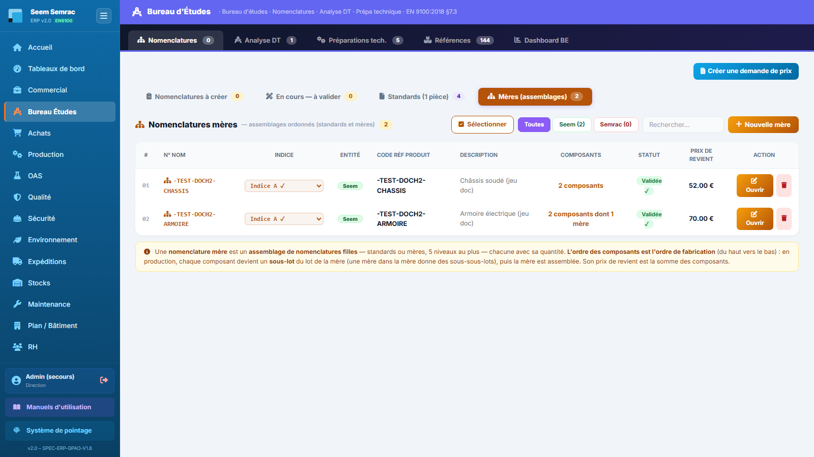
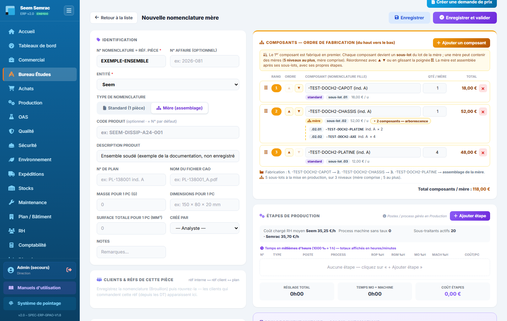

Service Bureau d'Études
Le Bureau d'Études définit techniquement les pièces : il crée les nomenclatures (matière, accessoires, gamme d'opérations), analyse les Demandes de Travaux (DT) transmises par le commercial pour calculer le coût de revient, prépare les programmes CN et tient le catalogue des références achetées. Ce manuel décrit chaque onglet et les procédures pas à pas.
Nomenclatures
À quoi ça sert. La nomenclature est la carte d'identité de fabrication d'une pièce : sa matière, ses accessoires, sa gamme d'opérations et son prix de revient calculé automatiquement. C'est ici que le BE crée les nomenclatures demandées par les DT « Nouveau produit », complète les brouillons, et fait vivre les révisions (indices A, B, C…). Sans nomenclature validée, l'analyse BE d'une DT ne peut pas chiffrer la pièce.
Ce que vous voyez
L'onglet s'ouvre sur quatre sous-onglets, avec en haut à droite un bouton « Créer une demande de prix » (envoi d'articles à chiffrer au service Achats) :
- Nomenclatures à créer — bandeau jaune « Nomenclatures à faire (depuis DT validées) » : chaque DT en attente de nomenclature y apparaît avec son client, son type, sa priorité, et un bouton par pièce à nomencler (réf × quantité). Le compteur du sous-onglet totalise les pièces restant à créer.
- Brouillons à traiter — les nomenclatures non validées (colonnes : N° NOM, Indice, Entité, N° Affaire, Code Réf, Description, Type, Créé le), avec les boutons Terminer et Supprimer. Un brouillon n'apparaît pas dans Standards/Mères tant qu'il n'est pas validé.
- Standards (1 pièce) — les nomenclatures validées décrivant une seule pièce. Colonnes : #, N° NOM, Indice (liste déroulante des révisions), Entité, N° Affaire, Code Réf Produit, Description, Statut, Prix de revient, Créé le, Action (Ouvrir / Supprimer). Filtres Toutes / Seem / Semrac, champ de recherche, sélection multiple pour suppression groupée, bouton « + Nouvelle nomenclature standard ».
- Mères (assemblages) — les nomenclatures qui assemblent des standards et d'autres mères (colonne Composants : « n composants dont m mère(s) »). Bouton « + Nouvelle mère ». Le prix de revient d'une mère est la somme de ses composants. L'ordre de ses composants est l'ordre de fabrication (voir plus bas).
Statuts d'une nomenclature : Brouillon En cours Validée ✓. L'entité est signalée par un badge Seem ou Semrac.


Pas à pas — créer une nomenclature depuis une DT
- Sous-onglet Nomenclatures à créer : repérez la DT concernée, puis cliquez le bouton de la pièce à nomencler (ex. + REF-PIECE ×10). Le formulaire s'ouvre pré-rempli (N° affaire, réf. pièce, n° de plan) — une notification le confirme.
- Complétez l'Identification (voir tableau des champs ci-dessous) : entité Seem/Semrac, description, masse, dimensions, surface…
- Ajoutez la Matière (tôle) — les compartiments Matière et Accessoires sont en haut de la colonne de droite, au-dessus des étapes. Tapez quelques lettres dans Réf. matière ou dans Désignation : la liste cherche dans tout le catalogue, tous fournisseurs confondus, sans tenir compte des majuscules ni des accents (« tole alu » trouve « Tôle aluminium ») ; choisir une entrée remplit les deux cases. Il n'y a plus de fournisseur à choisir. Renseignez Pc/tôle : le « Prix estimé / pièce » = moyenne du prix d'une tôle chez tous les fournisseurs qui portent la référence ÷ Pc/tôle.
- Ajoutez les Accessoires (visserie, composants…) : référence (ou désignation) et Nb/pièce. La quantité par paquet ne se saisit plus ici : elle est déclarée au catalogue, fournisseur par fournisseur (onglet Références, ou fiche fournisseur côté Achats). Le prix estimé = moyenne du prix d'une pièce chez chaque fournisseur (prix du paquet ÷ sa quantité par paquet) × Nb/pièce.
- Lisez la case « Prix estimé / pièce » : sous la valeur, un badge dit combien de fournisseurs ont été pris en compte et la fourchette (« 2 fourn. · 0,10–0,12 €/pce »). Survolez pour le détail, cliquez pour l'ouvrir en grand (fournisseur, prix catalogue, quantité par paquet, prix à la pièce, date). Orange = un prix a plus de 6 mois (demande de prix conseillée) ou le prix vient d'une ancienne saisie ; rouge « coût incomplet » = aucun prix connu (la pièce reste enregistrable et validable) ; « cond. ? » = un fournisseur n'a pas déclaré la quantité de son paquet, son prix est compté à la pièce.
- ⚠ Une même référence ne peut figurer qu'une seule fois dans la nomenclature, matière et accessoires confondus : la ligne en double est refusée, avec un message qui indique où se trouve l'autre.
- Construisez la gamme (« Étapes de production ») : pour chaque étape, choisissez le Type (Interne ou Sous-traité), puis le Poste d'atelier et le Process du poste (la machine liée se renseigne seule ; sous le process, une indication dit d'où vient le coût horaire : « Machine · 48,00 €/h », « Machine · taux à saisir » ou « Manuel · homme au coût chargé RH (35,25 €/h) »). Saisissez les temps en millièmes d'heure (1000 ‰ = 1 h) : ROP (réglage homme), RGM (réglage machine), MO (temps homme par pièce), Mach (temps machine par pièce — seulement pour un process machine). Réordonnez les étapes par glisser-déposer — cet ordre devient la séquence de fabrication des BDT.
- Pour une étape sous-traitée : choisissez le sous-traitant puis l'opération — le prix unitaire pièce et le forfait de son tarif s'appliquent automatiquement.
- Si un encart orange « Coût de revient incomplet » apparaît au-dessus de la gamme, un taux manque : taux horaire machine d'un process à saisir (Production › Process Ateliers) ou coût chargé RH absent des fiches salarié (RH). La part concernée compte 0 € tant qu'il n'est pas renseigné.
- Vérifiez le panneau « Prix de revient unitaire — Calcul automatique » : matière, accessoire, main d'œuvre fixe (réglage / lot), main d'œuvre variable (homme + machine / pièce), sous-traitance · OAS, et le total. Le bloc « Estimation commande » simule le coût pour une quantité : le réglage n'est compté qu'une fois par lot et la sous-traitance applique le forfait plancher (max entre forfait et qté × prix unitaire).
- Enregistrez : Brouillon (retrouvable dans « Brouillons à traiter »), Enregistrer & continuer (statut En cours), ou Valider la nomenclature. Le N° de nomenclature est obligatoire pour enregistrer.
- À la validation d'une nomenclature créée depuis une DT, la DT bascule automatiquement « en attente BE » : l'analyse (onglet Analyse DT) est débloquée.
Pas à pas — créer une nomenclature mère (assemblage) et ordonner ses composants
Une mère assemble des nomenclatures filles (standards) et, depuis le 18/09/2026, d'autres mères. L'ordre des composants est l'ordre de fabrication, lu du haut vers le bas : le 1er composant est fabriqué en premier, puis le 2e…, puis la mère est assemblée avec ses propres étapes.
- Sous-onglet Mères, cliquez « + Nouvelle mère » (ou basculez le type sur « Mère (assemblage) » dans le formulaire). Le bloc « Composants — ordre de fabrication (du haut vers le bas) » s'affiche en haut de la colonne de droite ; les compartiments matière/accessoires disparaissent (une mère n'a pas de fournitures propres).
- Cliquez « Ajouter un composant » et tapez quelques lettres (n°, code ou description, accents et majuscules sans importance) : la liste propose deux groupes, « Nomenclatures filles (standards) » et « Nomenclatures mères », avec la dernière révision validée de chaque pièce. Saisissez la quantité par mère (vide ou 0 = 1 : le champ est alors encadré de rouge). Le total s'affiche en direct.
- Remettez dans l'ordre de fabrication : boutons ▲ ▼ de la ligne (grisés en haut et en bas de liste), ou glissez la ligne par sa poignée ⠿, ou flèches ↑ ↓ du clavier sur la poignée. La pastille orange donne le rang ; sous la ligne, le n° de sous-lot qu'aura ce composant en production (
.01,.02…), son type (standard / mère) et son prix unitaire. Pour une sous-mère, le bouton « n composants — arborescence » déplie ses propres composants. - Lisez le résumé sous la liste : « Fabrication : 1. … → 2. … → assemblage de la mère » et « N sous-lots à la mise en production, sur K niveaux (mère comprise ; 5 au plus) ». S'il y en a, les mères qui contiennent déjà cette fiche sont rappelées.
- Enregistrez puis validez, comme pour une standard. Son prix de revient est la somme (prix × quantité) de ses composants — ⚠ ses étapes propres (assemblage) n'y sont pas ajoutées.

LOT-…-01.01, LOT-…-01.02…) ; si un composant est lui-même une mère, ses composants deviennent des sous-sous-lots (LOT-…-01.02.01). Chaque sous-lot a sa gamme, sa préparation technique et ses achats de matière, et se programme dès que la matière de l'affaire est en stock. La production retient la dernière révision validée de chaque composant : un composant sans révision validée n'est pas lancé (un avertissement le dit). Voir le manuel Production.Pas à pas — créer une révision (indice)
- Depuis la liste : la colonne Indice est une liste déroulante qui montre toutes les révisions du produit. Choisissez « ➕ Créer indice B… » (ou C, D…) : la nouvelle révision clone la dernière, l'ancienne est conservée et reste ouvrable via la même liste.
- Depuis le formulaire d'une nomenclature enregistrée : le bandeau violet « Indice actuel » propose « Incrémenter l'indice → B ». Confirmez : la révision précédente est conservée telle quelle.
- La nouvelle révision naît toujours « En cours », même si vous la créez depuis une nomenclature validée. Relisez-la, puis validez-la. Tant qu'elle n'est pas validée, les nouvelles commandes et l'OF gardent l'indice validé précédent.
Pas à pas — supprimer une nomenclature validée (motif obligatoire)
- Dans la liste, cliquez « Supprimer » sur la ligne. Pour un simple brouillon, une confirmation suffit.
- Pour une nomenclature validée — ou qui l’a été puis a été dévalidée —, une fenêtre dédiée réclame un motif. Sans motif, rien n’est supprimé.
- Écrivez pourquoi la fiche disparaît (pièce abandonnée, doublon, erreur de création…), puis confirmez.
- Le motif est inscrit au journal EN 9100 avec qui a supprimé et quand. Le journal survit à la fiche : la suppression reste consultable.
- Suppression groupée : cochez les lignes, puis lancez la suppression depuis la barre de sélection. Le motif est demandé une seule fois, dans la fenêtre de confirmation, et vaut pour toute la sélection.
Le formulaire nomenclature, champ par champ (Identification)
| Champ | Saisie | Obligatoire | Explication |
|---|---|---|---|
| N° Nomenclature = réf. pièce | Texte (ex. SEEM-DISSIP-A24) | Oui | Identifiant de la nomenclature ; c'est la référence interne de la pièce. |
| N° Affaire | Texte (ex. 2026-081) | Non | Rattache la nomenclature à une affaire ; vide = nomenclature « libre ». |
| Entité | Seem / Semrac | Oui | Filtre les postes et process proposés dans la gamme. Les matières et accessoires, eux, sont cherchés dans tout le catalogue (tous fournisseurs confondus) depuis le 17/09/2026. |
| Type de nomenclature | Standard (1 pièce) / Mère (assemblage) | Oui (Standard par défaut) | Une mère assemble des standards et des mères (5 niveaux au plus), dans l'ordre de fabrication ; ses fournitures propres sont masquées. |
| Code produit | Texte | Non | Par défaut égal au N° de nomenclature. |
| Description produit | Texte | Non | Désignation complète du produit. |
| N° de plan | Texte (ex. PL-138001 ind. A) | Non | Référence du plan de la pièce. |
| Nom du fichier CAO | Texte (ex. PL-138001_A.pdf) | Non | Se remplit seul si vous joignez le plan CAO en GED. Le lien « Ouvrir le plan », juste en dessous, affiche le fichier. |
| Masse pour 1 pc (g) | Nombre | Non | Saisie en grammes (stockée en kg côté base). |
| Dimensions pour 1 pc | Texte (ex. 150 × 80 × 20 mm) | Non | Encombrement de la pièce. |
| Surface totale pour 1 pc (mm²) | Nombre | Non | Surface développée : sert au calcul de charge des balancelles OAS. |
| Créé par | Liste des analystes BE | Non | Auteur de la nomenclature. |
| Notes | Texte | Non | Remarques libres. |
Sous l'identification, deux blocs complètent la fiche : « Clients & réfs de cette pièce » (le répertoire réf interne ↔ réf client ↔ plan, alimenté automatiquement par les DT validées, avec ajout manuel possible) et « Documents (GED) » pour joindre le plan client, le plan CAO et les programmes FAO par étape machine.

136290 a sa quantité par paquet déclarée au catalogue (100) : 10,40 € le paquet = 0,1040 € la pièce ; sans elle, la mention orange « cond. ? » apparaît et le prix du paquet est compté à la pièce. Les lignes et les temps de l'exemple sont posés dans le navigateur pour la capture, rien n'est enregistré.Le coût d'une étape, simplement
| Colonne de la gamme | Ce que c'est | Payé en homme | Payé en machine | Compté |
|---|---|---|---|---|
| ROP ‰h | Réglage fait par l'opérateur | ✔ | — | une fois par lot |
| RGM ‰h | Réglage de la machine (l'opérateur est dessus) | ✔ | ✔ | une fois par lot |
| MO ‰h | Temps homme par pièce | ✔ | — | par pièce |
| Mach ‰h | Temps machine par pièce | — | ✔ | par pièce |
Heure homme = coût chargé RH moyen des opérateurs du site de la nomenclature (Seem ou Semrac), tiré des fiches salarié. Heure machine = taux horaire machine du process choisi, saisi en Production. Un process manuel n'a pas d'heure machine : si vous le choisissez, le réglage machine rejoint le réglage homme et le temps machine rejoint le temps homme — rien n'est perdu.
Heures homme = 0,5 + 1 + 0,1 × 10 = 2,5 h → 87,50 € · Heures machine = 1 + 0,2 × 10 = 3 h → 180,00 €.
Étape = 267,50 € pour le lot (26,75 € / pièce). À une seule pièce, les réglages ne sont pas amortis : 1,6 h homme (56 €) + 1,2 h machine (72 €) = 128 €.
Règles & points d'attention
- Temps en millièmes d'heure : 1000 ‰ = 1 h. Les totaux s'affichent en heures/minutes.
- Le réglage est un coût fixe par lot : il n'est jamais multiplié par la quantité produite (la machine se règle une fois, qu'on fasse 1 ou 10 000 pièces).
- Les taux ne se saisissent pas ici : le taux horaire machine se saisit sur le process (Production › Process Ateliers), le coût chargé dans la fiche salarié (RH). La gamme les lit en direct.
- Si la lecture des taux échoue (base indisponible), un bandeau rouge « Taux de l'atelier illisibles » s'affiche et l'enregistrement est bloqué : rechargez la page quand la base répond.
- Prix = moyenne des fournisseurs du catalogue (17/09/2026) : une ligne désigne une référence, jamais un fournisseur. Exemple : la même vis à 10 € le paquet de 100 chez A (0,10 €/pièce) et 6 € le paquet de 50 chez B (0,12 €/pièce) donne 0,11 € la pièce. Tous les fournisseurs ayant un prix comptent, quel que soit son âge ; un prix de plus de 6 mois met la case en orange. Un prix déjà sur la ligne n'est jamais remis à 0 à l'affichage : si la référence n'est pas (ou plus) au catalogue, le dernier prix connu reste affiché en orange. Pas de saisie manuelle du prix matière/accessoire.
- Quantité par paquet au catalogue : c'est elle qui rend les offres comparables. Non déclarée chez un fournisseur, son prix de paquet est compté comme un prix à la pièce (mention orange « cond. ? ») — cela peut fausser la moyenne d'un facteur 100. Elle se déclare dans Références (bouton « Éditer ») ou dans Achats › Fournisseurs › fiche › Références fournies.
- Anciennes nomenclatures : une fiche qui portait encore un fournisseur et une quantité par paquet s'affiche avec le nouveau calcul (mention « ancien modèle » dans le détail) ; elle ne bascule réellement qu'au prochain enregistrement que vous ferez. Rien n'est converti en masse.
- Demande de prix à tout moment : chaque ligne matière ou accessoire a son bouton libellé « Demande de prix » (colonne du même nom, juste avant la croix, visible à toutes les largeurs d'écran) — bleu si le prix est récent (pour redemander quand même), orange si la demande est conseillée (prix ancien ou absent), ambre « En attente / vérifier » quand une demande est partie. Une référence ou une désignation suffit. La fenêtre s'ouvre pré-remplie avec un bloc Destinataires : tous les fournisseurs qui portent déjà cette référence sont cochés d'avance ; si personne ne la porte, choisissez librement. Le sablier « vérifier » reste affiché tant que les Achats n'ont pas validé la demande ; les prix validés entrent au catalogue et la moyenne se recalcule (le badge passe de « 1 fourn. » à « 2 fourn. »). ⚠ Si vous rechargez la page, le sablier disparaît : cliquez à nouveau plus tard ou vérifiez la demande dans Achats.
- Postes et process se gèrent dans Production → « Postes & Process » : la gamme ne fait que les choisir.
- Une nomenclature ouverte par un collègue est verrouillée : une notification vous indique qui la modifie ; patientez, la liste se met à jour en direct (rafraîchissement automatique toutes les ~7 secondes hors édition).
- Les champs « N° programme machine / fichier programme » n'apparaissent dans la gamme que pour les étapes sur machine CNC.
- Traçabilité EN 9100 : toute modification d’une nomenclature validée est inscrite au journal, avec son auteur — le compte connecté. Un brouillon n’est pas tracé : le journal commence à la validation.
- Supprimer une nomenclature validée demande un motif, y compris en suppression groupée. Il rejoint le journal EN 9100 avec l’auteur et la date : on saura toujours pourquoi la fiche n’est plus là.
cloud-5 non joué), la suppression d’une nomenclature validée est refusée : le motif ne pourrait pas être tracé. Le message vous le dit ; prévenez l’administrateur.Analyse DT (page /be/analyse)
À quoi ça sert. Quand le commercial valide une DT, elle arrive ici pour l'analyse technique : faisabilité, gamme, couverture matière et calcul du coût de revient unitaire (CRU). Le résultat alimente directement l'offre de prix côté commercial. L'onglet liste les DT à analyser et celles déjà analysées ; le bouton Analyser ouvre la page d'analyse complète.
Ce que vous voyez
Deux tableaux et un bouton « Demande de prix » :
- DTs en attente d'analyse BE — colonnes : N° DT / Affaire, Client, Pièce(s) · Qté, Type DT (Nouveau produit / Maj produit / Maj prix), Priorité (critique urgent normal), Date DT, Analyste, et deux actions : Analyser (ouvre la page /be/analyse pré-remplie) et Visualiser (œil).
- DT analysées — offres & commandes — colonnes : N° DT / Affaire, Client, Pièce(s) · Qté, Montant offre, Statut offre (Offre en cours Offre acceptée Commande créée Pas d'offre). Tant que l'offre n'est pas acceptée : bouton « Ré-éditer l'analyse ». Offre acceptée ou commande créée : l'analyse est figée (cadenas), seul Visualiser reste disponible.
Le bouton œil « Visualiser » ouvre un panneau en LECTURE SEULE (le badge l'indique) : la décomposition auto-calculée depuis les nomenclatures validées — par pièce : réf. interne, nomenclature, quantité, matière, MO (réglage inclus), machine, sous-traitance (forfait minimum inclus), total série et € / pièce. Aucune modification possible depuis cette vue : pour éditer, passez par « Analyser ».

La page d'analyse /be/analyse en détail
Ouverte via Analyser, la page charge automatiquement la DT : entête, pièces, quantités, exigences et plan sont déversés (une notification le confirme). Elle se compose, de haut en bas :
- Référence DT à analyser — N° DT et Client sont pré-remplis et verrouillés ; vous renseignez : Analyste BE (obligatoire, liste des salariés habilités BE), Date analyse, Priorité (Standard / Urgent / Critique), Type demande (Commande ferme / Prototype / Essai / Réclamation).
- Produits analysés — un bloc par pièce de la DT, avec le triplet lié : Réf. interne pièce ↔ N° plan client ↔ Réf. pièce client. Saisir l'une des trois remplit les cases vides depuis le répertoire des références clients ; un lien « Ouvrir le plan client » apparaît si le plan est en GED. La quantité vient de la DT (verrouillée).
- Exigences normatives — cases à cocher identiques à la DT : ISO 9001, EN 9100, REACH, RoHS, EN 13485.
- Couverture matière & accessoires — pour chaque fourniture de la nomenclature : besoin exprimé en tôles pour la matière (arrondi supérieur) et en pièces pour les accessoires (le passage en paquets se fait au bon de commande, par les Achats, qui connaissent alors le fournisseur), prix unité = prix moyen des fournisseurs du catalogue, recalculé à l'ouverture (ou « à chiffrer » si aucun prix récent), coût série, stock restant, seuil, et un état : Couvert Repasse sous seuil Insuffisant Rupture Hors stock. Le pied de tableau totalise le coût matière + accessoires de la série.
- Gamme opératoire — mêmes colonnes que la nomenclature (N°, Type, Poste, Process, Régl. ‰h, MO ‰h, Mach ‰h, Coût/pc). Les étapes issues de la nomenclature sont verrouillées (cadenas, non modifiables ni déplaçables). Le bouton « Ajouter une étape » insère une étape supplémentaire (fond violet) que vous positionnez par glisser-déposer entre les étapes verrouillées ; son coût s'ajoute au CRU. Il suit la même règle que la nomenclature : le réglage (Régl.) d'une étape ajoutée compte comme un réglage machine (homme, + machine si le process est de type machine), MO au coût chargé RH du site, Mach au taux horaire machine du process choisi. Le temps machine n'est saisissable que pour un process machine ; en sous-traitance ou sur un process OAS, les temps sont grisés (seul un prix forfaitaire compte). Un encart orange « Coût de revient incomplet » sous le produit signale un taux manquant.
- Temps & coûts par poste — regroupement par poste d'atelier avec les temps réels (réglage par lot + variable × quantité) et le coût série ; les flèches ‹ › font défiler les différentes quantités chiffrées.
- Chiffrage — Coût de revient (CRU) — tout est calculé automatiquement (matière, accessoire, MO+machine, sous-traitance) ; le seul champ saisissable est Frais généraux / lot (coût fixe par lot, amorti sur la quantité). Le tableau affiche une ligne par quantité : Matière ×q, Access. ×q, MO+mach ×q, S-trait ×q, Frais g. (lot), CRU total et CRU /pc ; la ligne de la quantité de la DT est surlignée.
- Analyse de faisabilité technique — Faisabilité (obligatoire : Faisable sans réserve / Faisable avec adaptation / Non faisable – alternative proposée), Commentaires, et pièces jointes complémentaires pour l'offre (rangées en GED, dossier « analyse DT »).
- Conclusion & transmission — Décision BE (obligatoire : ✅ Faisable – Offre à établir / ⚠ Faisable avec réserves – Points à clarifier / ❌ Non faisable – Alternative proposée) puis le bouton « Valider l'analyse BE complète ».

cloud-13).Pas à pas — analyser une DT
- Onglet Analyse DT, ligne de la DT, cliquez Analyser. Vérifiez l'entête et choisissez l'Analyste BE.
- Contrôlez chaque bloc produit : triplet de références, exigences cochées, couverture matière (un état « Rupture » ou « à chiffrer » se règle par une demande de prix ou un réapprovisionnement avant le lancement).
- Ajustez la gamme si besoin en ajoutant des étapes (les étapes nomenclature restent intouchées) et saisissez les éventuels frais généraux par lot.
- Renseignez Faisabilité, commentaires, et joignez les documents utiles à l'offre.
- Choisissez la Décision BE puis cliquez « Valider l'analyse BE complète » : l'analyse est enregistrée, le montant calculé, et la DT bascule dans les offres côté commercial (notification, puis retour automatique à l'onglet).
Règles & points d'attention
- L'analyse reste ré-éditable tant que l'offre n'est pas acceptée ; les marges par produit fixées dans l'offre sont conservées lors d'une ré-édition.
- La marge et le prix de vente ne se fixent pas ici : le BE produit le coût de revient ; la marge se règle dans l'offre de prix (service Commercial).
- Les BDT/BDS sont générés à la validation de la commande, puis visibles en Production.
Préparations tech.
À quoi ça sert. Avant de lancer une commande en fabrication, les pièces usinées sur machine CNC ont besoin de leurs codes programme. Cet onglet liste les commandes en attente de préparation technique et donne accès à la page de saisie des programmes CN — qui seront imprimés sur l'Ordre de Fabrication (OF) du lot.
Ce que vous voyez
Le tableau « Préparations techniques en attente » (le compteur reprend le badge de l'onglet) : N° CMD / Affaire, Client, Pièce(s), Activité, Livraison, Statut (Attente prépa ou À programmer) et le bouton Préparer qui ouvre la page /be/preparation.
Sur la page de préparation : une liste déroulante « Pièce à programmer » propose les nomenclatures dont au moins une étape tourne sur une machine CNC (le nombre de machines CNC et de pièces concernées est rappelé). Après sélection s'affichent : le bloc Plan de la pièce (N° de plan + indice, fichier plan / CAO) et, pour chaque étape CNC de la gamme, deux champs : N° programme CN (ex. O1234) et Fichier programme (ex. piece.nc, prog.mpf).

Pas à pas
- Cliquez Préparer sur la commande concernée (ou ouvrez directement la page de préparation).
- Choisissez la pièce dans la liste (nomenclatures avec étape CNC uniquement).
- Renseignez le N° de plan (+ indice) et le fichier plan / CAO — le fichier lui-même se joint en GED depuis la nomenclature.
- Pour chaque étape CNC, saisissez le N° programme CN et le fichier programme.
- Cliquez « Enregistrer la prépa (plan + codes) » : les codes se déversent dans la nomenclature et seront imprimés sur l'OF du lot (colonne « N° Programme »).
Règles & points d'attention
- Seules les pièces dont la gamme comporte une étape sur machine marquée CNC apparaissent dans la liste. Si la liste est vide, marquez vos machines comme CNC (Production → Machines) et rattachez-les aux étapes de la nomenclature.
- La préparation technique fait partie des portes de lancement : une commande « Attente prépa » ne part pas en production tant que la prépa n'est pas faite.
Références
À quoi ça sert. C'est le catalogue des références achetées (matières, fournitures, outils…) avec leur dernier prix unitaire et son historique. Il alimente la sélection matière/accessoires des nomenclatures et se remplit automatiquement à la validation des bons de commande, des demandes de prix, et depuis les nomenclatures du BE.
Ce que vous voyez
En tête, le nombre de références et deux boutons de création : « + Fournisseur / Sous-traitant » et « + Entrée catalogue ». Puis deux rangées de filtres — Catégorie (Toutes, Matière, Accessoires, Outils, Produits chimiques, Consommable, Autres) et Activité (Tous, Seem, Semrac) — avec un champ de recherche (réf, désignation, fournisseur).
Un bandeau orange signale, le cas échéant, combien d'accessoires n'ont pas de quantité par paquet déclarée : leur prix de paquet est compris à la pièce dans toutes les nomenclatures. Le tableau : Réf., Désignation, Catégorie, Activité, Fournisseur, Qté/paquet (« non déclarée » en orange pour un accessoire, « — » pour une matière), Dernier PU, et la colonne d'actions : Éditer (modifier la référence), Évolution (courbe du prix unitaire au fil des bons de commande, avec dernier prix, % d'évolution et tableau Date / PU / Qté / Fournisseur / BC), et Demande de prix sur chaque ligne (pré-remplit la demande avec cette référence) — orange quand le prix est absent ou daté de plus de 6 mois (demande conseillée), gris sinon.

Pas à pas — ajouter une entrée catalogue
- Cliquez « + Entrée catalogue ».
- Renseignez : Fournisseur, Référence (obligatoire), Catégorie (Matière / Accessoire / Outillage / Consommable / Chimique / Autres), Désignation (obligatoire), Prix HT (optionnel — matière : prix d'UNE TÔLE · accessoire : prix du PAQUET), Activité (Les deux / Seem / Semrac), et pour un accessoire la Quantité par paquet (nombre de pièces auquel se rapporte le prix ; la case n'apparaît que pour cette catégorie).
- Enregistrer. Sans prix, l'entrée reste « en attente de prix » — complétez-la via une demande de prix.
Pas à pas — créer un fournisseur ou un sous-traitant
- Cliquez « + Fournisseur / Sous-traitant » et choisissez le Type.
- Renseignez le Nom (obligatoire), le code, l'email, le téléphone — et pour un sous-traitant, ses prestations (séparées par des virgules, ex. Oxydation, Sérigraphie, Zingage).
- Créer : le fournisseur devient sélectionnable dans le catalogue (« + Entrée catalogue ») et côté Achats ; ses références, une fois déclarées, entrent dans le prix moyen des nomenclatures. La fiche complète (références fournies, tarifs ST…) se gère dans le service Achats.
Règles & points d'attention
- Le bon de commande n'écrit jamais le prix : le prix officiel vient des demandes de prix validées — d'où le bouton « Demande de prix », mis en évidence en orange sur les références au prix manquant ou périmé (> 6 mois).
- Lors de l'édition d'une référence, une case laissée vide ne change rien : prix, délai, unité, fournisseur restent ceux du catalogue. Remettre le même prix ne le « rajeunit » pas (sa date reste celle de la dernière demande de prix). ⚠ En conséquence, on ne peut plus vider un délai ni retirer le fournisseur d'une référence en effaçant la case.
- « + Entrée catalogue » sur une référence qui existe déjà chez ce fournisseur : l'ERP complète la ligne existante (désignation, prix s'il est saisi…) sans la dupliquer et sans changer sa catégorie ni son activité — pour les modifier, utilisez Éditer. Déclarer deux fois la même référence chez le même fournisseur est refusé (« à la casse près ») ; en revanche la même référence chez plusieurs fournisseurs est normale : c'est elle qui permet le prix moyen des nomenclatures.
- La quantité par paquet se déclare ici (ou dans la fiche du fournisseur, côté Achats — c'est le même catalogue), plus dans chaque nomenclature. Si votre base n'est pas encore à jour, l'ERP répond « Référence enregistrée, sauf la quantité par paquet… » : tout le reste est bien enregistré, prévenez l'administrateur.
- Depuis le 17/09/2026, une ligne de nomenclature ne désigne plus de fournisseur : l'enregistrer ne crée donc plus rien au catalogue. Seule une ancienne nomenclature (qui portait encore un fournisseur sur la ligne) ajoute au catalogue, sans prix, un couple fournisseur + référence absent ; aucune ne modifie jamais une référence existante.
- L'historique « Évolution » se remplit à chaque bon de commande validé : une référence jamais commandée n'a pas encore de courbe.
Dashboard BE
À quoi ça sert. Vue synthétique de la charge du Bureau d'Études : ce qui attend une analyse, une nomenclature ou une préparation, et les urgences à traiter en priorité. C'est l'écran à consulter en début de journée.
Ce que vous voyez
- 4 tuiles KPI : DTs en attente BE, Nomenclatures en cours, Préparations, Nomenclatures validées.
- Pipeline DTs : répartition En attente BE / Dans les offres / Commandes créées / Refus.
- Alertes : DT critiques (traitement prioritaire immédiat), DT urgentes, nomenclatures en attente, préparations qui bloquent la production — ou « Aucune alerte active ».
- Accès rapides : trois raccourcis vers Nomenclatures, Analyse DT et Prépa technique.

Pas à pas
- Consultez d'abord le bloc Alertes : traitez les DT critiques puis urgentes via l'accès rapide « Analyse DT ».
- Vérifiez les préparations en attente : chacune bloque le lancement d'une commande en production.
- Utilisez le Pipeline DTs pour suivre le devenir de vos analyses (offres, commandes, refus).
Règles & points d'attention
- Les compteurs sont calculés en direct à l'ouverture de la page : rechargez la page pour actualiser après un traitement.
- Pour des indicateurs filtrables par période et par site, utilisez aussi Tableaux de bord → Dashboard Bureau Études dans la sidebar.